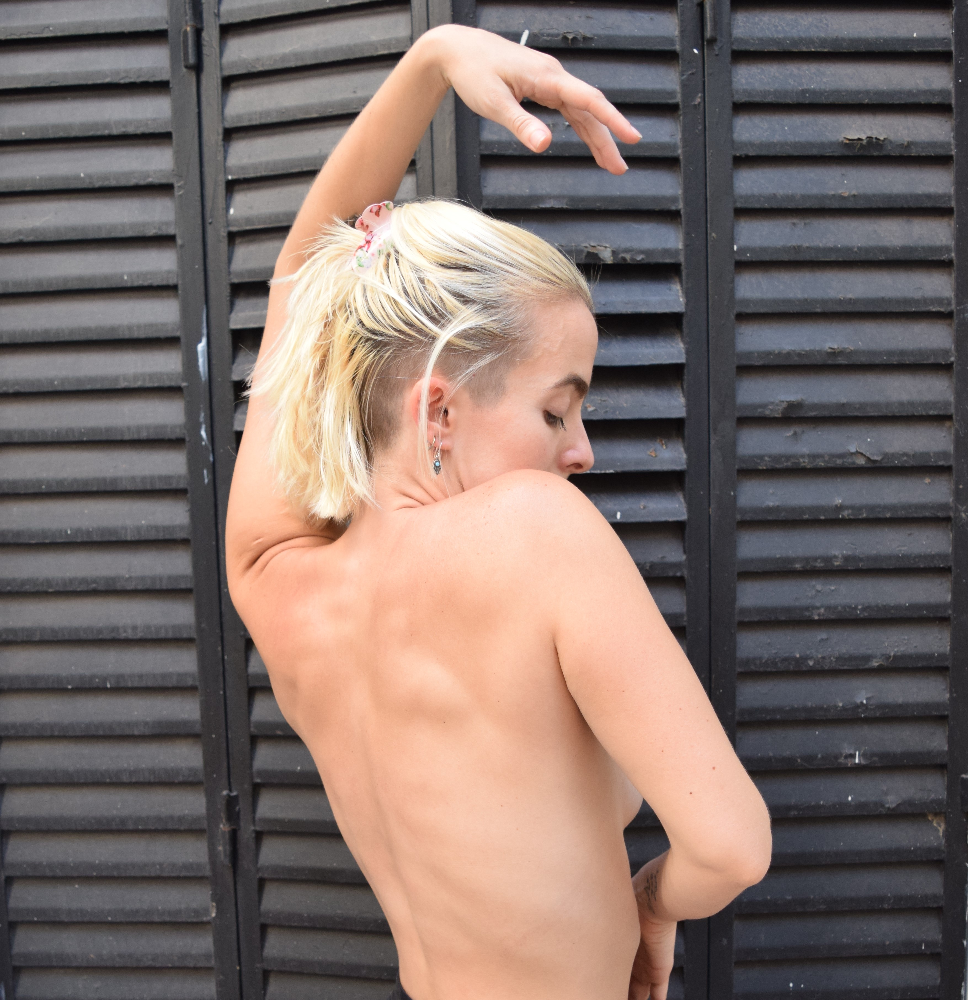

The Yoga is an ancient philosophy born in India, in Yoga we seek harmony between the body (Asanas), the breath (Pranayama) and the mind (Meditation). As any philosophy, there are different ways to interpret it. I choose to rethink and reformulate some old mandates that it brings with it and enhance the wonderful tools of self-knowledge that the Yoga brings us.
Pilates
In Pilates the harmony of our body is the most important thing, we seek to train the different muscle
chains, respecting our own anatomies, preventing injuries and unnecessary tensions.
Strength, flexibility, coordination and breathing are the axes of this technique.
Pilates was born in the early twentieth century during the first world war in a hospital ward.
Joseph Pilates, created it in response to the need to rehabilitate himself and his companions.

The training classes are designed for those who want to increase their overall physical performance. We work aerobically and anaerobically, going through the main muscle chains of the body. We never leave aside physical health, that is why in these classes we look for the right balance between increasing the physical power without leaving behind the general state of the body.
Training
Dance
Dance is for me a way to move in life, everything is danceable, I find dance everywhere, from small daily movements to big choreographies. Dancing is undoubtedly my greatest happiness and passion. That's why in my classes what interests me the most is to accompany the process of each student towards the connection with their own dance the different rhythms that inhabit us, the infinite forms and shapes that our body can go through. And above all the enjoyment, the pleasure, the inner fire that dance ignites.
